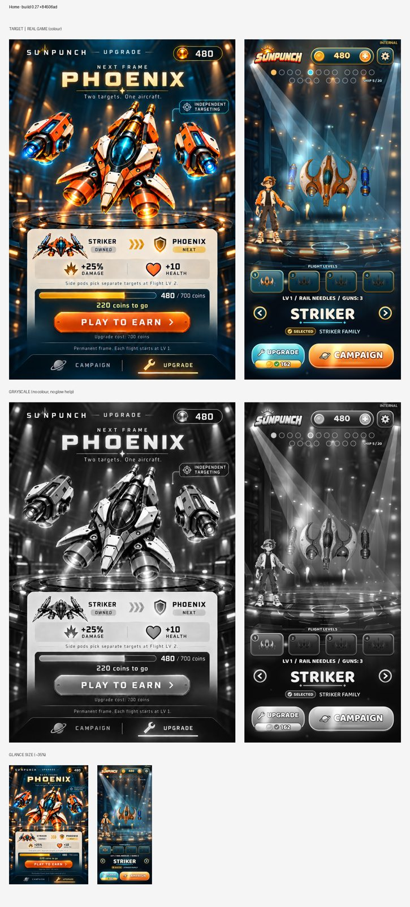
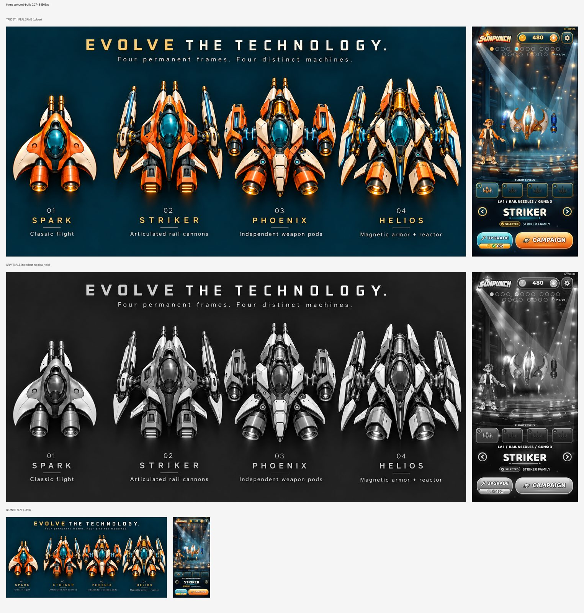
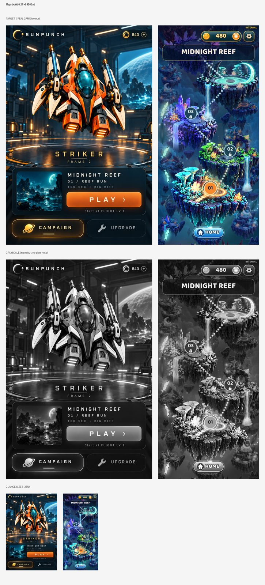
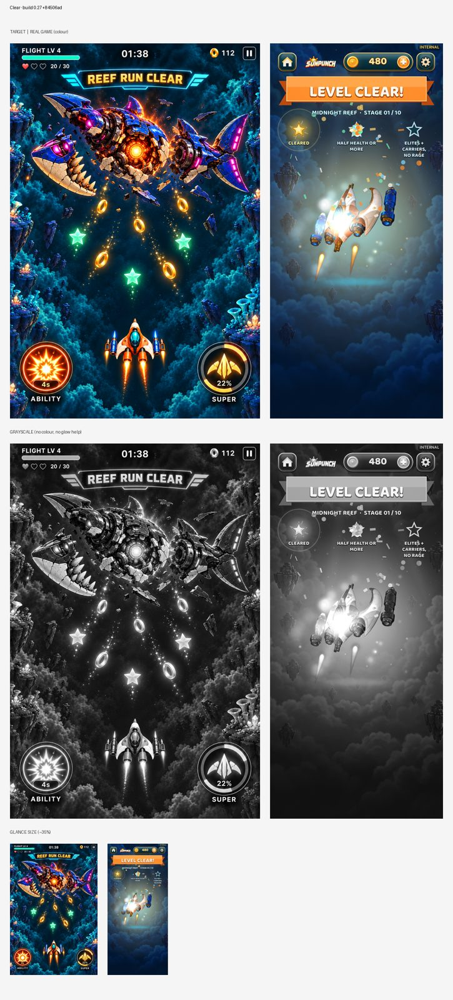
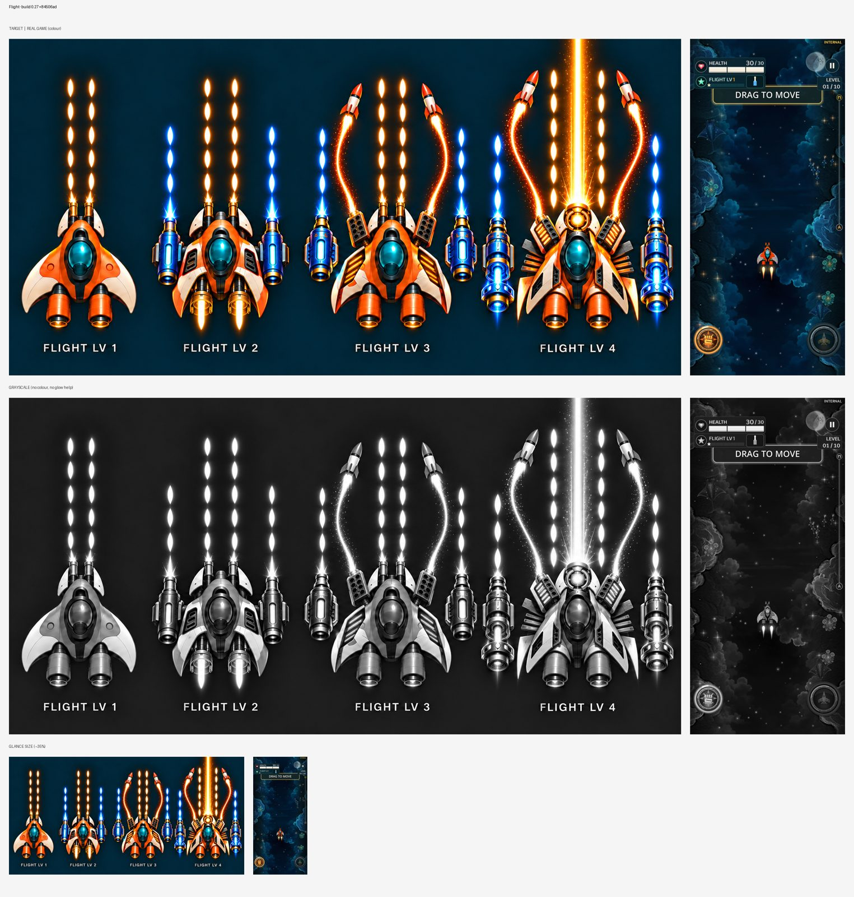

build.json · automated checks for build 0.27+84506ad
Automated: measured from 18 bot run(s) (event logs). Targets: config/build_checks.json feel.targets (+ studio defaults). It shows pacing and systems working; it does not show that a person finds it fun.
| Target | Threshold | Passing runs | Median |
|---|---|---|---|
| Empty screen time (share of play) | ≤ 0.15 | 18/18 ✅ | 0.0 |
| Longest empty gap (s) | ≤ 3.0 | 18/18 ✅ | 0.0 |
| Empty gaps over 2 s | ≤ 1 | 18/18 ✅ | 0.0 |
| Time to first power-up P2 (s) | ≤ 40 | 13/18 ⚠️ | 15.9 |
| Time at top power level (share) | ≥ 0.0 | 18/18 ✅ | 0.0 |
| Pickups collected (share) | ≥ 0.7 | 12/18 ⚠️ | 0.87 |
| Bot deaths | ≤ 1 | 18/18 ✅ | 1.0 |
| Mean enemies on screen | ≥ 1.0 | 18/18 ✅ | 4.86 |
| Run | Unit | Result | Play s | Empty % | Longest gap | Gaps>2s | → P2 s | Time at P1/P2/P3/P4 % | Pickups | Mean enemies | Supers | Fails |
|---|---|---|---|---|---|---|---|---|---|---|---|---|
| level_06 | spark | defeat | 41.9 | 2 | 1.0 | 0 | 17.0 | 40/11/14/34 | 96% | 5.64 | 1 | – |
| level_06 | spark | defeat | 37.7 | 0 | 0.0 | 0 | 15.2 | 40/7/44/8 | 83% | 4.89 | 1 | – |
| level_06 | spark | defeat | 21.7 | 0 | 0.0 | 0 | 15.5 | 72/18/10/0 | 63% | 5.55 | 0 | Pickups collected (share) |
| level_06 | spark | defeat | 12.6 | 0 | 0.0 | 0 | None | 100/0/0/0 | 57% | 3.38 | 0 | Time to first power-up P2 (s), Pickups collected (share) |
| level_06 | spark | defeat | 32.3 | 0 | 0.0 | 0 | 17.4 | 54/26/20/0 | 87% | 4.82 | 0 | – |
| level_06 | spark | defeat | 15.5 | 0 | 0.0 | 0 | None | 100/0/0/0 | 60% | 5.44 | 0 | Time to first power-up P2 (s), Pickups collected (share) |
| level_06 | spark | victory | 58.3 | 3 | 2.0 | 0 | 15.9 | 27/4/8/60 | 104% | 4.39 | 1 | – |
| level_06 | spark | victory | 57.9 | 0 | 0.0 | 0 | 12.0 | 21/19/18/43 | 97% | 4.9 | 2 | – |
| level_06 | spark | victory | 49.8 | 0 | 0.0 | 0 | 14.1 | 28/13/19/40 | 102% | 5.66 | 1 | – |
| level_07 | spark | defeat | 19.0 | 0 | 0.0 | 0 | 15.6 | 82/18/0/0 | 76% | 4.37 | 0 | – |
| level_07 | spark | defeat | 17.9 | 0 | 0.0 | 0 | 15.7 | 88/12/0/0 | 66% | 4.56 | 0 | Pickups collected (share) |
| level_07 | spark | defeat | 13.0 | 0 | 0.0 | 0 | None | 100/0/0/0 | 11% | 4.21 | 0 | Time to first power-up P2 (s), Pickups collected (share) |
| level_07 | spark | defeat | 15.9 | 0 | 0.0 | 0 | None | 100/0/0/0 | 87% | 5.88 | 0 | Time to first power-up P2 (s) |
| level_07 | spark | defeat | 6.5 | 0 | 0.0 | 0 | None | 100/0/0/0 | 100% | 5.29 | 0 | Time to first power-up P2 (s) |
| level_07 | spark | defeat | 19.3 | 0 | 0.0 | 0 | 16.3 | 84/16/0/0 | 56% | 5.7 | 0 | Pickups collected (share) |
| level_07 | spark | victory | 59.4 | 0 | 0.0 | 0 | 16.0 | 27/8/22/43 | 96% | 4.18 | 2 | – |
| level_07 | spark | victory | 58.9 | 0 | 0.0 | 0 | 17.2 | 29/6/12/52 | 97% | 4.14 | 2 | – |
| level_07 | spark | victory | 54.5 | 2 | 1.0 | 0 | 15.9 | 29/6/20/45 | 100% | 3.69 | 2 | – |
Automated: each capture from this build beside its visual-bible target (sheets below), with measured differences. The numbers flag drift; they don't judge quality. Look at the sheets.
| # | Screen | Lightness (build / target) | Contrast | Colourfulness | Dark share | Highlights | Drift flags | Sheet |
|---|---|---|---|---|---|---|---|---|
| 1 | Home | 32.1 / 36.0 | 23.7 / 30.6 | 15.1 / 18.5 | 0.38 / 0.46 | 0.06 / 0.18 | missing highlights/glow | art_01.jpg |
| 2 | Home carousel | 32.1 / 23.4 | 24.0 / 21.6 | 15.0 / 17.9 | 0.39 / 0.75 | 0.06 / 0.05 | – | art_02.jpg |
| 3 | Map | 33.0 / 26.1 | 23.2 / 23.5 | 27.5 / 17.1 | 0.34 / 0.57 | 0.06 / 0.05 | more saturated | art_03.jpg |
| 4 | Clear | 34.0 / 26.1 | 23.3 / 21.6 | 19.4 / 25.1 | 0.35 / 0.55 | 0.04 / 0.04 | – | art_04.jpg |
| 5 | Flight | 13.4 / 25.5 | 13.6 / 24.3 | 14.5 / 22.9 | 0.84 / 0.7 | 0.01 / 0.07 | darker, flatter, missing highlights/glow | art_05.jpg |
| Screen | Build | Target |
|---|---|---|
| Home | #091824 #48575a #192933 #6a7b7b #393532 #babda4 | #15232a #041a26 #684f3f #ede3cd #3c2820 #c6ac85 |
| Home carousel | #081723 #262e32 #315464 #6a7e7f #b9bca4 #675d51 | #002736 #072d3b #001b27 #5d4c39 #baa07f #122024 |
| Map | #2e5276 #0a1e40 #172b51 #2a335c #5a7c91 #95c9bd | #101e27 #081620 #3a3b3b #736554 #241f1d #aab09c |
| Clear | #041b39 #495a63 #28384c #8a8874 #152c48 #c5bc9f | #001e32 #013857 #3a5e6f #8ea98d #3b394b #1b1d31 |
| Flight | #072132 #06131e #0e2f42 #011427 #021224 #456166 | #002132 #022130 #7d5641 #251b17 #c9b79b #182b35 |
Target: every role pair ≥ 25.0.
| Roles | Closest pair ΔE | Result |
|---|---|---|




